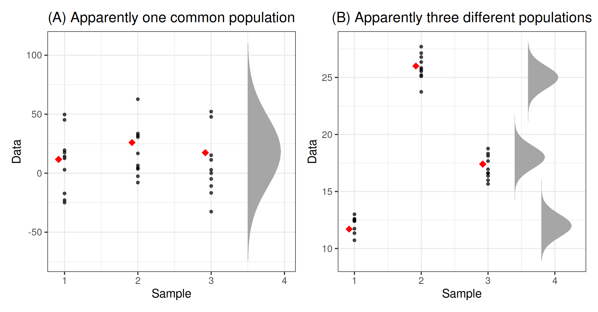

These exercises cover the lecture materials from weeks 1 and 2 of semester 2. So take this lab slowly, try to understand it and don’t rush through it as it is important material.
You will have those two weeks to work through these exercises.
You might remember that we use a t-test to test whether two population means are equal. But what if we want to compare more than two groups?
ANOVA, which stands for ANalysis Of VAriance, is a method to assess whether the observed differences among sample means are statistically significant. For example, could a variation among three sample means this large be plausibly due to chance, or is it good evidence for a difference among the population means?
In this week’s exercises you will be asked to use one-way ANOVA to test for a difference in means among several groups specified by the levels of a single factor.
The null and alternative hypotheses used for comparing \(g\) population means can be written as follows:
Although the name “analysis of variance” may seem odd to compare group means, we will actually establish if there is a significant different among the means by comparing the variability between the group means to the variability within each group.
Consider the two figures below, each corresponding to a different dataset. Each dataset comprises three samples. The sample observations are shown as black dots. Furthermore, each sample mean is displayed as a red diamond.

Even if the null hypothesis were true, and the means of the populations underlying the groups were equal, we would still expect the sample means to vary a bit.
For each dataset, we wish to decide whether the sample means are different enough for us to reject the null hypothesis of equal population means. On the contrary, if they are sufficiently close, we will just attribute the observed differences to the natural variability from sample to sample.
What do you think?
It is fairly easy to see that the means in dataset (B) differ. It’s hard to imagine that those means could be that far apart just from natural sampling variability alone.
How about dataset (A)? It looks like these observations could have occurred from three populations having the same mean. The variation among the group means (red diamonds) in the left plot does seem consistent with the null hypothesis of equal population means.
Believe it or not, both plots have the same means! The group means in both plots are 11.7, 26, and 17.4, respectively.
So what is making the figures look so different???
In plot (B), the variation within each group is so small that the differences between the means stand out. In plot (A), instead, the variation within each group is much larger compared to the variation of the group means. This, in turn, increases the range of the y-axis, making it difficult to spot any differences between the means.
To verify our intuition, we will compute the residuals. These correspond to each observation minus the mean of the group it belongs to.
We might now compare the variability among the group means with the variability of the residuals (observation minus group mean). The following table reports the relevant variances:2
| Variability | Dataset A | Dataset B |
|---|---|---|
| Means | 35.74 | 35.74 |
| Residuals | 591.2 | 1.005 |
For dataset (A), the variability among the group means is smaller than the variability of the residuals.
For dataset (B), the variability among the group means is larger than the variability of the residuals.
This might prompt us to consider the following ratio, \[ \frac{\text{variability among means}}{\text{variability of residuals}} \] also called the F-statistic, and we typically reject the null hypothesis for large values of the ratio (meaning that the variability among the means is larger than the variability of the residuals).
This is the central idea of the F-test used in ANOVA. If the variation of the group means is much larger than the variation of the data within each group, we reject the null hypothesis and conclude that at least two of the population means are different. On the contrary, if the variation of the data within each group is much larger than the variation between the group means, we do not have sufficient evidence to reject the null hypothesis of equal population means.
How do we compute the variation among the residuals (or the group means)? Do you remember the formula of the variance? We will use the quantity at the numerator of the variance, which is called sum of squares. This is why the method is called analysis of variance.
Do you think the type of background music playing in a restaurant affects the amount of money that diners spend on their meal?
Load the tidyverse library.
Read the restaurant spending data into R using the function read_csv() and name the data rest_spend.
Check for the correct encoding of all variables — that is, categorical variables should be factors and numeric variables should be numeric.
Hint: Transform a variable to a factor by using the functions factor() or as.factor().
Create a table of summary statistics showing the number of people in each type of background music, along with their average spending and standard deviation.
Produce a boxplot displaying the relationship between restaurant spending and music type.
Using the boxplot, comment on any observed differences among the sample means of the three background music types.
Please note that this question just asks you to comment on any visible differences among the groups, not to run any formal test or analysis.
Each music type is considered as a different population with its own mean spending. However, the three populations (there is one for each music type) are assumed to have the same variance.
R by default orders the levels of a categorical variable in alphabetical order:
levels(rest_spend$type)## [1] "Classical Music" "No Music" "Pop Music"If we follow the same approach and order the groups by alphabetical ordering, we can represent the data as follows:
| Population Name | Population ID | Sample observations | Population mean |
|---|---|---|---|
| Classical Music | 1 | \(y_{1,1}, y_{1,2}, ..., y_{1,n}\) | \(\mu_{1}\) |
| No Music | 2 | \(y_{2,1}, y_{2,2}, ..., y_{2,n}\) | \(\mu_{2}\) |
| Pop Music | 3 | \(y_{3,1}, y_{3,2}, ..., y_{3,n}\) | \(\mu_{3}\) |
For the restaurant spending data, what is the number of groups (\(g\)) and the numbers of observations per group (\(n\))?
The data are assumed to follow the model: \[ y_{i,j} = \mu_{i} + \epsilon_{i,j} \qquad \begin{cases} i = 1, 2, 3 \\ j = 1, 2, ..., 120 \end{cases} \]
where the \(\epsilon_{i,j}\)s are assumed to be independent and follow a \(N(0, \sigma)\) distribution.
In the model above,
The model parameters are \(\mu_1, \mu_2, \mu_3\) and \(\sigma\).
There is another common rewriting of the above model which is widely used in practice.
To get there, we first need to define: \[ \mu_i = \beta_0 + \underbrace{(\mu_{i} - \beta_0)}_{\beta_i} = \beta_0 + \beta_i \]
That is, each group mean is:
We have silently introduced one additional parameter (\(\beta_0\)), and now we have 4 parameters (\(\beta_0, \beta_1, \beta_2, \beta_3\)) to model only 3 group means (\(\mu_1, \mu_2, \mu_3\)).
You can think of \(\beta_0\) as the baseline value, and the \(\beta_1, \beta_2, \beta_3\) as group effects.
This might seem like we are overcomplicating the model but, instead, it will make interpretation much easier in the context of multiple factors (to be discussed in the next weeks).
The effects model is: \[ y_{i,j} = \beta_0 + \beta_i + \epsilon_{i,j}\qquad \begin{cases} i = 1, 2, ..., g \\ j = 1, 2, ..., n \end{cases} \]
with the \(\epsilon_{i,j}\)s independently following a \(N(0, \sigma)\) distribution as usual.
PROBLEM
As we have four \(\beta\)s to model 3 group means (\(\mu\)s), the model is said to be not identifiable. We cannot distinguish any more whether the group mean is due to a group effect or not.
For example, we can get the same group mean \(\mu_i = 10\), say, either by setting:
To make the model identifiable again, we need to introduce a constraint on the parameters, effectively reducing the degrees of freedom to three, which is also the number of group means.
Before continuing, however, let us define the overall mean as \[ \mu = \frac{\mu_1 + \mu_2 + \mu_3}{3} \]
Possible side-constraints on the parameters are:
| Name | Constraint | Meaning of \(\beta_0\) | R |
|---|---|---|---|
| Sum to zero | \(\beta_1 + \beta_2 + \beta_3 = 0\) | \(\beta_0 = \mu\) | contr.sum |
| Reference group | \(\beta_1 = 0\) | \(\beta_0 = \mu_1\) | contr.treatment |
Under the constraint \(\beta_1 + \beta_2 + \beta_3 = 0\), the model coefficients are interpreted as follows:
The interpretation of \(\beta_0\) follows from the constraint: \[ \begin{aligned} \beta_1 + \beta_2 + \beta_3 &= 0 \\ (\mu_1 - \beta_0) + (\mu_2 - \beta_0) + (\mu_3 - \beta_0) &= 0 \\ \mu_1 + \mu_2 + \mu_3 &= 3 \beta_0 \\ \beta_0 &= \frac{\mu_1 + \mu_2 + \mu_3}{3} = \mu \end{aligned} \] which shows that \(\beta_0\) corresponds to the global mean, i.e. the average of the three group means.
The treatment effect represents the deviation between the mean response produced by treatment \(i\) and the global mean: \[ \beta_i = \mu_i - \beta_0 = \mu_i - \mu \] If the treatment effect is positive (negative), the \(i\)th treatment produces an increase (decrease) in the mean response.
Typically, software doesn’t return the last \(\beta_3\) as this can be found using the side constraint \[ \begin{aligned} \beta_1 + \beta_2 + \beta_3 &= 0 \\ \beta_3 = - (\beta_1 + \beta_2 ) \end{aligned} \] Each group mean is found as:
In practice, this is done by fitting the linear regression model
\[ y = b_0 + b_1 \ \text{EffectLevel1} + b_2 \ \text{EffectLevel2} + \epsilon \]
where
\[ \text{EffectLevel1} = \begin{cases} 1 & \text{if observation is from category 1} \\ 0 & \text{if observation is from category 2} \\ -1 & \text{otherwise} \end{cases} \\ \text{EffectLevel2} = \begin{cases} 1 & \text{if observation is from category 2} \\ 0 & \text{if observation is from category 1} \\ -1 & \text{otherwise} \end{cases} \]
Schematically,
\[ \begin{matrix} \textbf{Level} & \textbf{EffectLevel1} & \textbf{EffectLevel2} \\ \hline \text{Classical Music} & 1 & 0 \\ \text{No Music} & 0 & 1 \\ \text{Pop Music} & -1 & -1 \end{matrix} \]
In R this is simply done by saying:
contrasts(rest_spend$type) <- "contr.sum"
mdl_sum <- lm(amount ~ 1 + type, data = rest_spend) # or: lm(amount ~ type, data = rest_spend)
coef(mdl_sum)## (Intercept) type1 type2
## 22.7381560 1.4359846 -0.5967688where type is a factor. In such case R will automatically create the two variables EffectLevel1 and EffectLevel2 for you!
The summary(mdl) will return 3 estimated coefficients:
summary as it is found via the side-constraint as \(b_3 = -(b_1 + b_2) = -0.84\)!Under the constraint \(\beta_1 = 0\), meaning that the first factor level is the reference group,
Roughly speaking, \(\beta_i\) can still be interpreted as the “treatment effect,” but compared to a reference category: typically a control group or placebo.
The interpretation of \(\beta_0\) follows from: \[ \begin{aligned} \beta_1 &= 0 \\ \mu_1 - \beta_0 &= 0 \\ \beta_0 &= \mu_1 \end{aligned} \]
The interpretation of the \(\beta_i\)s follows from: \[ \begin{aligned} \beta_i = \mu_i - \beta_0 = \mu_i - \mu_1 \end{aligned} \] showing that it is the deviation between the mean response in group \(i\) and the mean response in the reference group.
As \(\beta_1 = 0\), each group mean is found as:
In practice, this is done by fitting the linear regression model
\[ y = b_0 + b_1 \ \text{IsTypeNoMusic} + b_2 \ \text{IsTypePopMusic} +\epsilon \]
where
\[ \text{IsTypeNoMusic} = \begin{cases} 1 & \text{if observation is from the No Music category} \\ 0 & \text{otherwise} \end{cases} \\ \text{IsTypePopMusic} = \begin{cases} 1 & \text{if observation is from the Pop Music category} \\ 0 & \text{otherwise} \end{cases} \]
Schematically,
\[ \begin{matrix} \textbf{Level} & \textbf{IsTypeNoMusic} & \textbf{IsTypePopMusic} \\ \hline \text{Classical Music} & 0 & 0 \\ \text{No Music} & 1 & 0 \\ \text{Pop Music} & 0 & 1 \end{matrix} \]
In R this is simply done by saying:
contrasts(rest_spend$type) <- "contr.treatment"
mdl_trt <- lm(amount ~ 1 + type, data = rest_spend) # or: lm(amount ~ type, data = rest_spend)
coef(mdl_trt)## (Intercept) typeNo Music typePop Music
## 24.174141 -2.032753 -2.275200where type is a factor. In such case R will automatically create the two dummy variables IsTypeNoMusic and IsTypePopMusic for you!
The summary(mdl) will return 3 estimated coefficients:
IMPORTANT
By default R uses the reference group constraint
If your factor has \(g\) levels, your regression model will have \(g-1\) dummy variables (R creates them for you)
By default, R uses the reference group constraint. In this section and the next one, we will not specify any side-constraints, meaning that \(\beta_1 = 0\).
Under the reference group constraint, the interpretation of the model coefficients is as follows: \[ \mu_1 = \beta_0, \qquad \mu_2 = \beta_0 + \beta_2, \qquad \mu_3 = \beta_0 + \beta_3 \]
Show that under the reference group constraint, the null hypothesis of the F-test for model utility is equivalent to the ANOVA null hypothesis. In other words, demonstrate that \[ H_0: \beta_2 = \beta_3 = 0 \] is equivalent to \[ H_0 : \mu_1 = \mu_2 = \mu_3 \]
Fit a linear model to the data, having amount as response variable and the factor type as predictor. Call the fitted model mdl_rg (for reference group constraint, which R uses by default!)
Identify the relevant pieces of information from the commands anova(mdl_rg) and summary(mdl_rg) that can be used to conduct an ANOVA F-test against the null hypothesis that all population means are equal.
Interpret the F-test results in the context of the ANOVA null hypothesis.
Examine and investigate the meaning of the coefficients in the output of summary(mdl_rg)
The function dummy.coef() returns the coefficients for all groups, including the reference category.
Run the dummy.coef() function on the fitted model, and examine the output.
Obtain the estimated (or predicted) group means for the “Classical Music,” “No Music,” and “Pop Music” groups by using the predict(mdl_rg, newdata = ...) function.
Compare the output of the predict() function with that from dummy.coef().
It actually makes more sense to have “No Music” as reference group.
Open the help page of the function fct_relevel(), and look at the examples.
Within the rest_sped data, reorder the levels of the factor type so that your reference group is “No Music.”
NOTE
Because you reordered the levels, now
Refit the linear model, and inspect the model summary once more.
Do you notice any change in the estimated coefficients?
Do you notice any change in the F-test for model utility?
Let’s compare some population means…
Interpret the results of the t-test for the significance of the model coefficients.
Let’s now change the side-constraint from the R default, the reference group or contr.treatment constraint, to the sum-to-zero constraint.
Recall that under this constraint the interpretation of the coefficients becomes:
We set the sum-to-zero side constraint by saying
contrasts(rest_spend$type) <- "contr.sum"Set the sum to zero constraint for the factor type of background music.
Fit again the linear model using amount as response variable and type as predictor. Call the fitted model using the sum to zero constraint mdl_stz.
Examine the output of the summary(mdl_stz) function:
Let’s do more hypothesis tests on the population means…
Interpret the results of the t-tests on the coefficients of the model fitted using the sum to zero side-constraint.
We can switch back to the default reference group constraint by either of these
# Option 1
contrasts(rest_spend$type) <- NULL
# Option 2
contrasts(rest_spend$type) <- "contr.treatment"When the ANOVA F-test against the null hypothesis \(H_0: \mu_1 = \mu_2 = \cdots = \mu_g\) is rejected, it tells us that there are significant differences between at least two of the group means. However, it does not tells us which particular population means are different. Further investigation should be conducted to find out exactly which population means differ. In some cases the investigator will have preplanned comparisons they would like to make; in other situations they may have no idea what differences to look for.
Contrasts represent a wide range of hypotheses about the population means that can be tested using the fitted model.
However, they need to match the following general form. A contrast only allows us to test hypotheses that can be written as a linear combination of the population means with coefficients summing to zero: \[ H_0 : c_1 \mu_1 + c_2 \mu_2 + c_3 \mu_3 = 0 \qquad \text{with} \qquad c_1 + c_2 + c_3 = 0 \]
We have already performed some simple contrasts by looking at the model coefficients under the reference group constraint. Those represented pairwise comparisons between each group and the reference group.
However, say you wanted to test other hypotheses? Such as a combinations of two groups against a third group?
To do so, please install once for all the library emmeans via:
install.packages("emmeans")Then, every time you want to use any of its functions, remember that you need to load it via
library(emmeans)We were interested in the following comparisons:
These are planned comparisons and can be translated to the following research hypotheses: \[ \begin{aligned} 1. \quad H_0 &: \mu_\text{No Music} = \frac{1}{2} (\mu_\text{Classical Music} + \mu_\text{Pop Music}) \\ 2. \quad H_0 &: \mu_\text{No Music} = \mu_\text{Pop Music} \end{aligned} \]
First of all check the levels of the factor type, as the contrast coefficients need to match the order of the levels:
levels(rest_spend$type)## [1] "No Music" "Classical Music" "Pop Music"We specify the hypotheses by first giving each a name, and then specify the coefficients of the comparisons:
comp <- list("No Music - Some Music" = c(1, -1/2, -1/2),
"No Music - Pop Music" = c(1, 0, -1))Then, we load the emmeans package:
library(emmeans)Use the emmeans() function to obtain the estimated treatment means and uncertainties for your factor:
emm <- emmeans(mdl_stz, ~ type)
emm## type emmean SE df lower.CL upper.CL
## No Music 22.1 0.259 357 21.6 22.7
## Classical Music 24.2 0.259 357 23.7 24.7
## Pop Music 21.9 0.259 357 21.4 22.4
##
## Confidence level used: 0.95Next, we run the contrast analysis. To do so, we use the contrast() function:
comp_res <- contrast(emm, method = comp)
comp_res## contrast estimate SE df t.ratio p.value
## No Music - Some Music -0.895 0.318 357 -2.818 0.0051
## No Music - Pop Music 0.242 0.367 357 0.661 0.5090Finally, we can ask for 95% confidence intervals:
confint(comp_res)## contrast estimate SE df lower.CL upper.CL
## No Music - Some Music -0.895 0.318 357 -1.520 -0.270
## No Music - Pop Music 0.242 0.367 357 -0.479 0.964
##
## Confidence level used: 0.95Interpret the result of the contrast analysis.
The alternative hypothesis that “the means are not all equal” should not be confused with “all the means are different.” With 10 groups we could have 9 means equal to each other and 1 different. The null hypothesis would still be false.↩︎
Recall that the variance is the squared standard deviation.↩︎